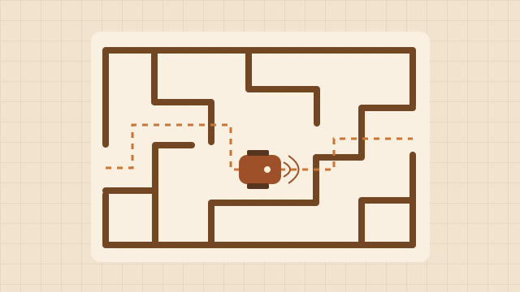

02 / Embedded systems
Autonomous Maze Robot
An Arduino robot that navigates a physical maze using infrared sensor feedback.

01 / Question
What the project asks
A robot operating in a physical maze has to make movement decisions from incomplete sensor readings. The project combines sensing and motor control so behaviour can be tested on the robot as well as inspected in the program.
02 / Approach
How it works
The Arduino interprets IR sensor readings for nearby walls and controls the servos. A state variable allows a navigation decision to depend on an earlier event. Timer logic uses elapsed time as a separate input to a decision.
Course requirements
The ELEC1601 brief defines these three sets of assessment criteria.
- Essential
- Use left, front and right IR readings to recognise the starting scenario and show its LED code. Stay still in an unknown case. In the defined cases, drive 5 cm along a corridor, make 90° turns or a 180° U-turn, and recover from starts near or angled toward a wall. The corridor manoeuvres specify a 3 cm centreline tolerance.
- Extension Part 1
- Progress from stopping at the first front wall after a challenging start, to making one turn, to navigating to a dead end, and finally to turning around and returning to the start. The layout may be mirrored.
- Extension Part 2
- Navigate S-turns, U-turns and T-junctions in a variable maze. Escape a short dead end without wall contact. Finish facing forward at a dead end reached after exactly two wall segments of straight travel.
03 / Contribution
My contribution
I helped plan the approach, contributed to the robot’s code, and debugged the project with my teammates.
04 / Interpretation
What the project shows
Serial output records sensor scores and navigation decisions. In Extension Part 2, elapsed time serves as a proxy for corridor length, so the stop threshold needs calibration on the robot.
05 / Materials
Project materials
The GitHub repository contains the coursework requirements and Arduino sketches for non-commercial review.